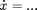
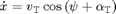
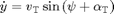
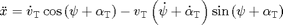
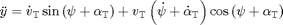

FILTRO DE KALMAN
VERIFICAR A NORMA DE P - PARECE ERRADA FAZER NORMA DO GANHO DE KALMAN RESIDO? OU ALGO PARECIDO COM O GRAFICO QUE COMPARA P- e P+
Contents
Média e matriz de covariância dos erros, condicionadas à história das observações
Problemas
Mesmo que a condição inicial do estado do sistema seja Gaussiana, como as transformações são não lineares, não se pode garantir que qualquer estado subsequente seja Gaussiano.
Filtros sub-ótimos
O sistema dinâmico é descrito por uma equação diferencial estocástica vetorial

Planta
clear all % Clear workspace close all % Closing figures clc % Clear command window import VehicleDynamicsLateral.* % Parâmetros da planta % Choosing plant tire TirePlant = TirePacejka()
% Choosing plant vehicle
VehiclePlant = VehicleSimpleNonlinear();
VehiclePlant.tire = TirePlant
% Choosing simulation T = 6; % Total simulation time [s] resol = 50; % Resolution TSPAN = 0:T/resol:T; % Time span [s] simulatorPlant = Simulator(VehiclePlant, TSPAN); % Simulation simulatorPlant.Simulate() simulatorPlant
% Retrieving states XTPlant = simulatorPlant.XT; YTPlant = simulatorPlant.YT; PSIPlant = simulatorPlant.PSI; VELPlant = simulatorPlant.VEL; ALPHATPlant = simulatorPlant.ALPHAT; dPSIPlant = simulatorPlant.dPSI; XOUTPlant = [XTPlant YTPlant PSIPlant VELPlant ALPHATPlant dPSIPlant]; gPlant = Graphics(simulatorPlant); gPlant.TractorColor = 'r'; gPlant.Frame(0);
Modelo
close all % Closing figures % Parâmetros da planta % Choosing plant tire TireModel = TireLinear()
% Choosing plant vehicle
VehicleModel = VehicleSimpleNonlinear();
VehicleModel.tire = TireModel
% Choosing simulation T = 6; % Total simulation time [s] resol = 50; % Resolution TSPAN = 0:T/resol:T; % Time span [s] simulatorModel = Simulator(VehicleModel, TSPAN); % Simulation simulatorModel.Simulate() simulatorModel
% Retrieving states XTModel = simulatorModel.XT; YTModel = simulatorModel.YT; PSIModel = simulatorModel.PSI; PHIModel = simulatorModel.PHI; VELModel = simulatorModel.VEL; ALPHATModel = simulatorModel.ALPHAT; dPSIModel = simulatorModel.dPSI; dPHIModel = simulatorModel.dPHI; gModel = Graphics(simulatorModel); gModel.TractorColor = 'g'; gModel.Frame(0);
close all % Closing figures
Comparação - Diferença de 10 m na direção X no momento da curva.
gPlant.Frame(0);
hold on
gModel.Frame(0);
close all % Closing figures
Matrizes do modelo linearizado
syms XT YT PSI vT ALPHAT dPSI mT IT a b K
Slip angles
ALPHAF = atan((vT * sin(ALPHAT) + a * dPSI)/(vT * cos(ALPHAT))); % Dianteiro ALPHAR = atan((vT * sin(ALPHAT) - b * dPSI)/(vT * cos(ALPHAT))); % Traseiro
pretty(ALPHAF)
pretty(ALPHAR)
Lateral forces
FyF = -K*ALPHAF; FyR = -K*ALPHAR;
pretty(FyF)
pretty(FyR)
Equations of motion
f1 = vT * cos(ALPHAT + PSI); f2 = vT * sin(ALPHAT + PSI); f3 = dPSI; f4 = (FyF * sin(ALPHAT) + FyR * sin(ALPHAT))/(mT); f5 = (FyF * cos(ALPHAT) + FyR * cos(ALPHAT) - mT * vT * dPSI) / (mT * vT); f6 = (FyF * a - FyR * b) / IT; f = [f1 ; f2 ; f3 ; f4 ; f5 ; f6];
pretty(f)
Vetor de estados
States = [XT ; YT ; PSI ; vT ; ALPHAT ; dPSI]; F = jacobian(f,States); F = simplify(F);
pretty(F)
Medição




ddX = f4*cos(PSI + ALPHAT) - vT*(dPSI + f5)*sin(PSI + ALPHAT);
ddY = f4*sin(PSI + ALPHAT) + vT*(dPSI + f5)*cos(PSI + ALPHAT);
% $$ {\bf A} = \left( \ddot{x} \cos \psi - \ddot{y} \sin \psi \right) {\bf t}_x + \left( - \ddot{x} \sin \psi + \ddot{y} \sin \psi \right) {\bf t}_y$$
ACEL = [ddX*cos(PSI) - ddY*sin(PSI) ; -ddX*sin(PSI) + ddY*cos(PSI)]; ACEL = simplify(ACEL);
pretty(ACEL) H = jacobian(ACEL,States); H = simplify(H);
Testando a linearização na reta
syms v0
A = subs(F,States,[0 ; 0 ; 0 ; v0 ; 0 ; 0]);
pretty(A)
C = subs(H,States,[0 ; 0 ; 0 ; v0 ; 0 ; 0]); pretty(C)
Filtro estendido de Kalman
Q = eye(6); R = eye(2); G = eye(6); PMat0 = eye(6); P0 = [PMat0(1) PMat0(2) PMat0(3) PMat0(4) PMat0(5) PMat0(6) PMat0(7) PMat0(8) PMat0(9) PMat0(10) PMat0(11) PMat0(12) PMat0(13) PMat0(14) PMat0(15) PMat0(16) PMat0(17) PMat0(18) PMat0(19) PMat0(20) PMat0(21) PMat0(22) PMat0(23) PMat0(24) PMat0(25) PMat0(26) PMat0(27) PMat0(28) PMat0(29) PMat0(30) PMat0(31) PMat0(32) PMat0(33) PMat0(34) PMat0(35) PMat0(36)]; % Recuperando as condições iniciais usadas acima X0Num = simulatorModel.X0; Y0Num = simulatorModel.Y0; PSI0Num = simulatorModel.PSI0; VEL0Num = simulatorModel.V0; ALPHAT0Num = simulatorModel.ALPHAT0; dPSI0Num = simulatorModel.dPSI0; % Condições iniciais x0 = [ X0Num ; Y0Num ; PSI0Num ; VEL0Num ; ALPHAT0Num ; dPSI0Num ]; mTNum = VehicleModel.mT; ITNum = VehicleModel.IT; aNum = VehicleModel.a; bNum = VehicleModel.b; KNum = TireModel.k; parameters = [mTNum ITNum aNum bNum KNum]; ACELXcontinuo = (KNum*sin(2*PSIPlant).*(atan((aNum*dPSIPlant + VELPlant.*sin(ALPHATPlant))./(VELPlant.*cos(ALPHATPlant))) - atan((bNum*dPSIPlant - VELPlant.*sin(ALPHATPlant))./(VELPlant.*cos(ALPHATPlant)))))/mTNum; ACELYcontinuo = -(KNum*(atan((aNum*dPSIPlant + VELPlant.*sin(ALPHATPlant))./(VELPlant.*cos(ALPHATPlant))) - atan((bNum*dPSIPlant - VELPlant.*sin(ALPHATPlant))./(VELPlant.*cos(ALPHATPlant)))))/mTNum; % Inicializando o tempo t intervalo = 0.25; % Prealocando z z = zeros(2,1); t = 0:intervalo:T; XOUTopt = zeros(length(t) + 1,length(States)); Popt = zeros(length(t) + 1,1); XOUTopt(1,:) = x0'; Popt = norm(P0); for j = 1:length(t) tspan = t(j):intervalo/100:t(j)+intervalo; z(1) = interp1(TSPAN,ACELXcontinuo,t(j)); z(2) = interp1(TSPAN,ACELYcontinuo,t(j)); ACELNum = subs(ACEL,[States.' mT IT a b K],[x0.' parameters]); ACELNum = double(ACELNum); Fnum = subs(F,[States.' mT IT a b K],[x0.' parameters]); Fnum = double(Fnum); Hnum = subs(H,[States.' mT IT a b K],[x0.' parameters]); Hnum = double(Hnum); % Ciclo de propagação [TOUT,Pout] = ode45(@(t,P) IntCov(t,P,Fnum,G,Q),tspan,P0'); Pmatrix = [ Pout(1) Pout(2) Pout(3) Pout(4) Pout(5) Pout(6);... Pout(7) Pout(8) Pout(9) Pout(10) Pout(11) Pout(12);... Pout(13) Pout(14) Pout(15) Pout(16) Pout(17) Pout(18);... Pout(19) Pout(20) Pout(21) Pout(22) Pout(23) Pout(24);... Pout(25) Pout(26) Pout(27) Pout(28) Pout(29) Pout(30);... Pout(31) Pout(32) Pout(33) Pout(34) Pout(35) Pout(36)]; simulatorKalman = Simulator(VehicleModel, tspan); % Definindo as condições iniciais simulatorKalman.X0 = x0(1); simulatorKalman.Y0 = x0(2); simulatorKalman.PSI0 = x0(3); simulatorKalman.V0 = x0(4); simulatorKalman.ALPHAT0 = x0(5); simulatorKalman.dPSI0 = x0(6); % Simulando simulatorKalman.Simulate() XTKalman = simulatorKalman.XT; YTKalman = simulatorKalman.YT; PSIKalman = simulatorKalman.PSI; VELKalman = simulatorKalman.VEL; ALPHATKalman = simulatorKalman.ALPHAT; dPSIKalman = simulatorKalman.dPSI; XOUTKalman = [XTKalman YTKalman PSIKalman VELKalman ALPHATKalman dPSIKalman]; % Ciclo de atualização KKalman = Pmatrix*Hnum' / (Hnum*Pmatrix*Hnum' + R); XKalman = XOUTKalman(end,:)' + KKalman*(z - ACELNum); PKalman = Pmatrix - KKalman*Hnum*Pmatrix; x0 = XKalman; P0 = PKalman; XOUTopt(j+1,:) = XKalman'; Popt(j+1) = norm(PKalman); end
Comparação
figure(1) hold on plot(TSPAN,XOUTPlant(:,1),'r') plot(t,XOUTopt(1:end-1,1),'r--') figure(2) hold on plot(TSPAN,XOUTPlant(:,2),'g') plot(t,XOUTopt(1:end-1,2),'g--') figure(3) hold on plot(TSPAN,XOUTPlant(:,3),'b') plot(t,XOUTopt(1:end-1,3),'b--') figure(4) hold on plot(TSPAN,XOUTPlant(:,4),'c') plot(t,XOUTopt(1:end-1,4),'c--') figure(5) hold on plot(TSPAN,XOUTPlant(:,5),'m') plot(t,XOUTopt(1:end-1,5),'m--') figure(6) hold on plot(TSPAN,XOUTPlant(:,6),'k') plot(t,XOUTopt(1:end-1,6),'k--') figure(7) plot(t,Popt(1:end-1))
close all
Trajetória da estimativa
Usando o simulatorPlant para inicializar o Graphics do Kalman
gKalman = Graphics(simulatorKalman);
gKalman.Simulator.TSpan = t;
gKalman.Simulator.XT = XOUTopt(1:end-1,1);
gKalman.Simulator.YT = XOUTopt(1:end-1,2);
gKalman.Simulator.PSI = XOUTopt(1:end-1,3);
gKalman.Simulator.VEL = XOUTopt(1:end-1,4);
gKalman.Simulator.ALPHAT = XOUTopt(1:end-1,5);
gKalman.Simulator.dPSI = XOUTopt(1:end-1,6);
gKalman.TractorColor = 'b';
gKalman.Frame(0)
close all
gPlant.Frame(0);
hold on
gModel.Frame(0);
gKalman.Frame(0);